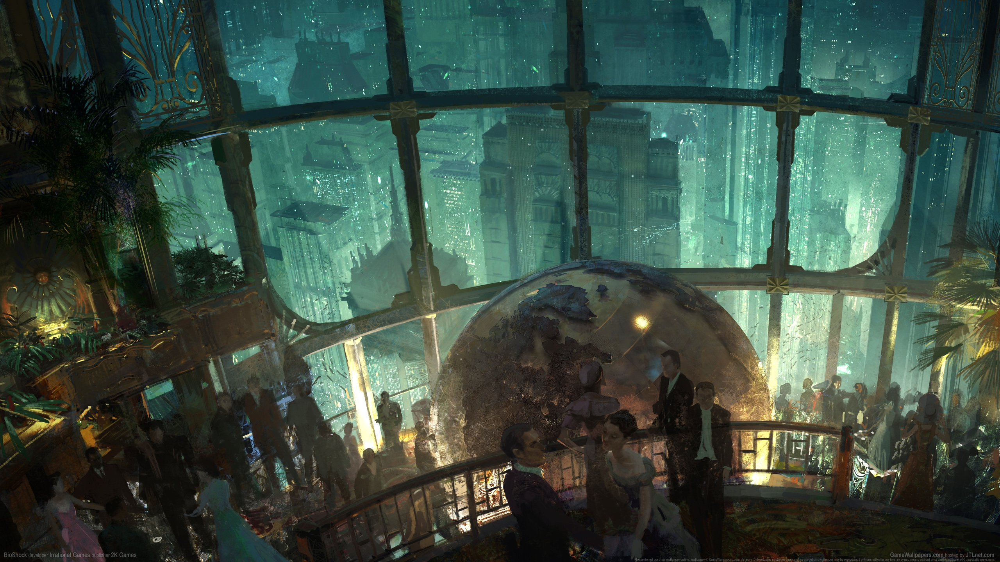
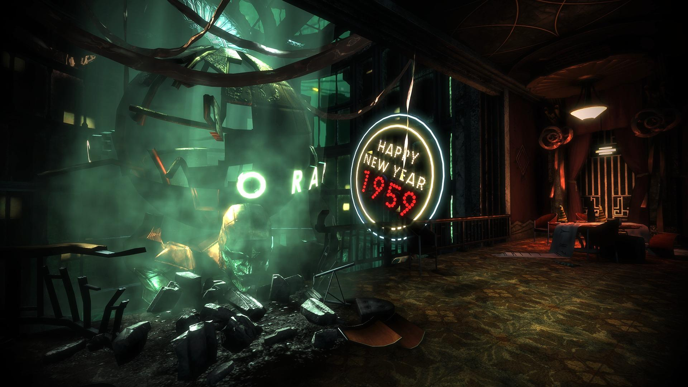

Explore a Vibrant Utopia

Perhaps utopia isn't a fitting description anymore, but Rapture's inhabitants are still a vibrant bunch! In Bioshock you'll explore the underwater city known as Rapture, hailed as a land free from government and moral constraints. Surely nothing could go wrong with this fantastic idea, right? Explore the last breaths of an underwater utopia consumed by madness, fueled by scientific advancement and individual greed. Along the way, you'll witness a marvel of architectural brilliance and meet genetically modified citizens thirsting for ADAM. A scientific wonder giving humans the ability to wield telekinesis, lightning, fire, and make nearly any modification to their physiology. Help Atlas save his family from a crumbling insane asylum, and listen to the sinister downfall of the once beautiful gem hidden within the Atlantic Ocean.
Or what's left, at least

This website is to serve as both an invitation and a warning to all who visit. If you're a fan of horror, action, and tragic tales this title is a must. However, those who can't sit through a horror movie or are generally squeamish should stay above water! As you fight through this dystopian nightmare and uncover the truth of its demise, will you save what little remains or take the last scraps of power for yourself? Not that you really had a choice coming here, it was a stroke of luck you survived the plane crash on the way to meet your family in England. Now all you can do is trust the few sane citizens you meet and work your way back to the surface. Just remember, "We all make choices, but in the end our choices make us".